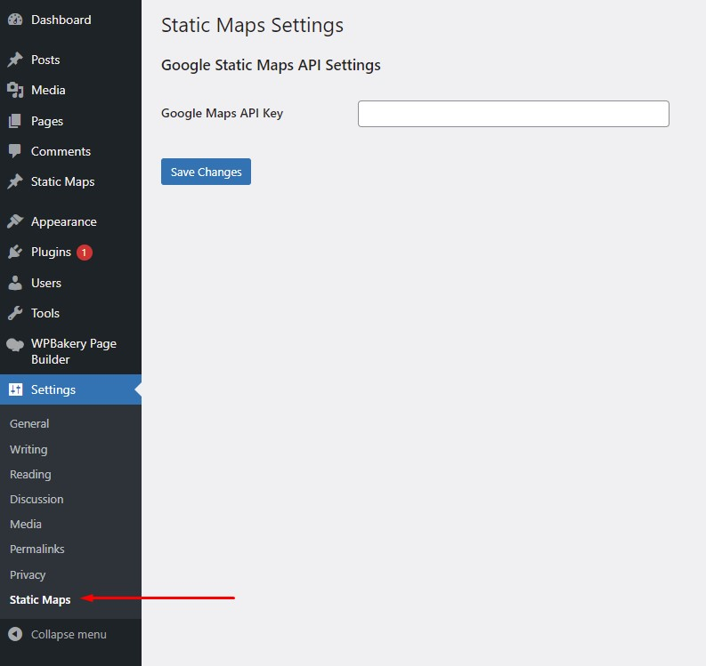
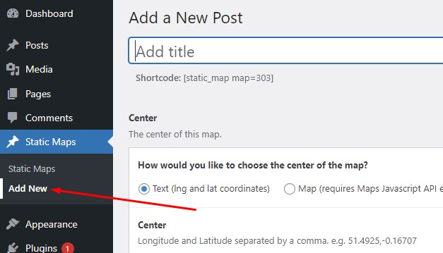
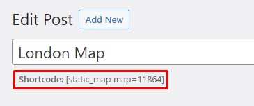

Google Static Maps Builder
The visual solution to static maps on WordPress
A WordPress plugin designed to make it easy for users to create and embed static maps using Google’s Static Maps API. The interface that the plugin provides (built with Advanced Custom Fields Pro) solves the problem with the Google Static Maps API of it being complicated and unintuitive to set up.
1. Copy the `static-maps` folder into your `wp-content/plugins folder`
2. Activate the Static Maps plugin via the plugins admin page
3. Set your Google Maps API key. You can do this by either going the plugin's own setting at `/wp-admin/options-general.php?page=static_maps_settings` [Fig.1] OR you can ACF's suggested method to register your API key (https://www.advancedcustomfields.com/resources/google-map/#requirements)
4. Create a new Static Map by clicking on the Static Maps button on the left admin bar and clicking "Add New". If your API key is not set up, you should see warning.

Fig.1 - The Static Maps setting pages to easily input your Google Maps API key.
Once your Google Maps API key has been set up, you should be ready to start setting up your first Static Map.
Start by going to Static Maps --> Add New (`/wp-admin/post-new.php?post_type=static_map`). [Fig.2]
Below the Title field, you'll see the shortcode you can use to add that specific Static Map anywhere on your site. [Fig.3]

Fig.2 - Highlighting where to add a new static map.

Fig.3 - Highlighting where the shortcode is displayed for each static map.
Static Map base map settings
The first set of fields when creating your Static Map will be the base map settings:
- Center: The center of this Static Map - can be defined with a map pin or with lng,lat coordinates
- Size: Google Maps limits this to 640x640 (1280x1280 with scale=2)
- Zoom: Defaults to 10 - the lower the number, the more zoomed out the Static Map will be
- Scale
- Map Type
Map Markers
You can add as many markers to your Static Map as you want by clicking "Add Marker". Markers are made of the following settings:
- Label: This character will show on the marker/pin itself. Can be 1 character A-Z or 0-9. Can also be left blank
- Size: The size of the map marker - sizes are predefined as per Google's documentation
- Color: The color of the map marker
- Pin Location(s): You can add as many pins as you want, and you can add them with either a list of lng,lat coordinates or by choosing the locations on a Google Map.
To see examples maps with an explanation of their settings, visit
rajivlodhia.com/projects/google-static-maps-builder
Google Maps API Key
Your Google Maps API key will need at bare minimum the Maps Static API to be enabled on your API key
for this plugin do anything useful.
To use the map fields in the WordPress backend to choose your pins, etc you will need the following APIs enabled:
- Maps Javascript API
- Places API
- Geocoding API